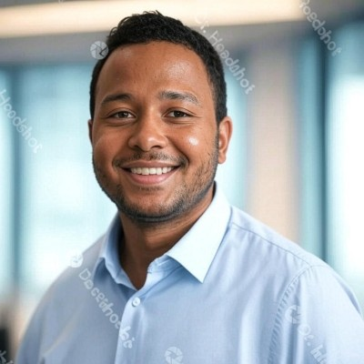

Vienna, Austria
My journey into software development began as a self-taught learner, fueled by curiosity and a passion for problem-solving. I started with Java, mastering structured and object-oriented programming, which laid a strong foundation for my understanding of coding principles.
Eager to grow, I transitioned to C#, diving into backend development and learning how modern applications interact with databases and frameworks. I also embraced front-end development with HTML, CSS, and JavaScript, enabling me to build complete web solutions from scratch.
My exploration led me to Go, a language I value for its simplicity and performance in creating concurrent applications. Go has become my go-to for developing robust APIs and microservices, allowing me to craft efficient solutions without complexity.
To solidify my skills, I completed an intensive bootcamp at Digitalcampus in Vorarlberg, Austria. This hands-on program sharpened my technical abilities, exposed me to modern technologies, and taught me industry best practices, significantly advancing my development expertise.
As a freelancer, I’ve tackled diverse projects, from debugging legacy code to building new features and optimizing performance. These experiences underscored the importance of clean code, collaboration, and adaptability. I practice coding daily, working on personal projects to stay current with technologies like Go, C#, and AI advancements.
Now living in Vienna, I am passionately pursuing my first entry-level tech job. With conversational proficiency in German, I am well-equipped to collaborate in Austria’s vibrant tech scene. My freelance experience, daily practice, and relentless drive to learn make me a dedicated candidate ready to contribute to innovative projects. I am flexible with relocation and eager to bring my skills to a dynamic team.
Explore my work and connect with me on GitHub. I’m excited to discuss how I can contribute to your organization! Linkedin